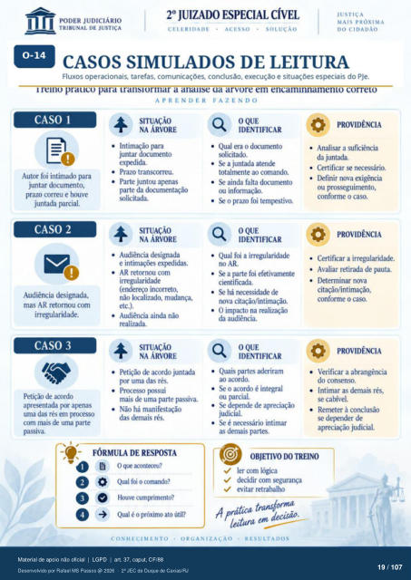

Transcrição automática em português, ainda não revisada. Confira grafia, prazos e termos jurídicos na imagem e no PDF antes de utilizar.
1 1
CASOS SIMULADOS DE LEITURA
Fluxos operacionais. tarefas, comunicações. conclusão, execução e situações especiais do PJe. remo prauco para translormar a ananse ua arvore em encaminnamemo correto
APRENDER FAZENDO
CASO 1
Autor foi intimado para juntar documento,
pram correu e houve juntada parcial.
CASO 2
Audiência designada, mas AR retornou com
irregularidade.
CASO 3
Petição de acordo apresentada alRnas
uma das rés em processo com mais de uma parte
passiva.
PROVIDÊNCIA
SITUAÇÃO
NA ÁRVORE
Intimação juntar dcxumento
exFdida. Prazo transcorreu.
Parte juntou apenas da d(rumentação
solicitada.
SITUAÇÃO
Audiência designada e expedidas.
AR retornou com irregularidade
(endereço incu-reto, não IOizado, mudança,
etc.). Audiência ainda não
realizada.
SITUAÇÃO
NA ÁRVORE
Petição de acordo juntada pr uma das rés.
Processo lxyssui mais de uma parte passiva.
Não há manifestação das demais rés.
OQUE
IDENTIFICAR
Qual era o dcxumento
solicitado.
a juntada atende
tOmente ao comando.
Se ainda falta dcxurnento
ou informação.
prazo foi
OQUE
IDENTIFICAR
Analisar a suficiência da juntada.
Certifiüir necessário.
Ikfinir nova exigência
ou prosseguimento, conforme o caso.
PROVIDÊNCIA
Qual foi a irregularidade a parte foi efetivamente
cientificada. Se há necessidade de
rma citação/intimação. O impacto na realização
da audiência. OQUE
IDENTIFICAR
Quais partes aderiram
ao acordo. Se o acordo é integral
ou parcial. Se depende de apreciação
judicial.
Se é necessário intimar
as demais partes.
Certificar a irregularidade. Avaliar retirada de pauta.
I)eterminar nova citação/intimação,
conforme o caso.
PROVIDÊNCIA
Verificar a abrangência do
Intimar as demais rés, se cabível.
Remeter à conclusão se dermder de
apreciação judicial.
FÓRMULA DE RESPOSTA
Oque Qual foi o comando?
Houve cumprimento? Qual é o próximo ato útiP
@ OBJETIVO DO TREINO
v' ler com lógica decidir com segurança
evitar retrat%ilho transforma
CONHECIMENTO
ORGANIZAÇÃO
RESULTADOS
Ver também o infográfico original (página 19)
